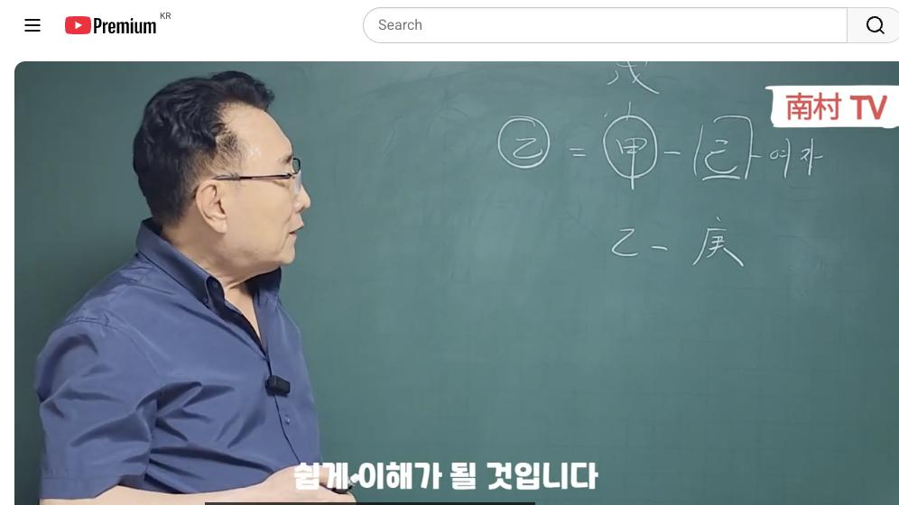

남촌물상TV 전체 문서 › 동영상 V0004
[기본원리]3강 갑기 합의 원리 어떻게 알고 계시나요?

| 문서 번호 | V0004 (동영상) |
|---|---|
| 영상 URL | https://www.youtube.com/watch?v=VS4k6Fo9-dQ |
| 영상 ID | VS4k6Fo9-dQ |
| 게시일 | 2023-08-14 |
| 길이 | 10:54 (654초) |
| 조회수 | 4,894회 (수집 시점 기준) |
| 카테고리 | People & Blogs |
| 자막 | ko (자동생성) |
| 수집 시각 | 2026-08-29 18:44 (KST) |
영상 설명 (YouTube 설명 원문 그대로)
갑기 합의 원리 어떻게 적용하고 계시나요? #격국 #용신 #포태법 #12운성 #12신살 #사주팔자 #사주명리학 #사주공부 #물상론 #명리학강의 #물상명리 #성명학 #관상 #천간합의원리#명리기초 #철학관 #대영작명철학원 #만세력 #남촌물상명리 #명리학 #사주 #궁합 #사주MBTI #사주분석 #사주궁합 #사주직업 #남촌물상tv #남촌물상론 #천간합
#갑기합 #합의원리 #기본원리
전체 자막 (291구간 · 타임스탬프 클릭 시 해당 장면으로 이동)
[0:01][음악]
[0:08]안녕하세요 반갑습니다
[0:11]지난번에 그
[0:12]간단히 소개를 드렸습니다만은 저는
[0:15]동방대관에서 물상 명령을 강의하는
[0:17]김대규 교수입니다
[0:19]지난번에 총괄 합의 원리를 자세하게
[0:22]설명을 드렸었고
[0:24]천간의 합의 원리가 어떻게 변한
[0:26]과정도 설명을 드렸었고 또
[0:28]황시 묶여 있을 때와
[0:30]푸른시대 관계 이제 이런 부분을
[0:32]설명을
[0:34]드렸었습니다
[0:45]자 그럼 이제 우리
[0:47]갑목과 을목토의 관계는
[0:49]관계는이 갑목이라는
[0:52]물상을 어떻게 표현할 것이냐
[0:54]갑목은 큰 나무로 표현할 수 있고
[0:58]을목은
[0:59]작은 나무로 표현할 수가 있는 거예요
[1:02]자 그러면이 큰 갑목의 나무가
[1:05]살아혈당은
[1:06]무슨 땅이어야 되느냐
[1:08]갑목이 살아야 할 땅은 무토의 땅이
[1:11]적합하고 좋죠
[1:13]근데 이제 우리가
[1:15]꼭 삶이 그렇지 않잖아요
[1:17]각기 합으로 사는 남자도 있을 거고
[1:19]또 무토와
[1:21]갑목에 심어서는 남자를 사는 남자도
[1:24]있다
[1:25]근데 이제 우리는 중요한 것은 뭐냐면
[1:28]각기 합으로 묶여 있을 때
[1:30]삶을 어떻게 헤쳐나가는 방법이
[1:32]무엇인가 자 이런 것을
[1:35]구별해서 설명을 드리고자 합니다
[1:36]그러면이 키토는
[1:38]기토는
[1:39]작은 땅으로 되어 있다가
[1:41]작은 땅
[1:42]근데 각기 합의라는 것은이
[1:45]작은 땅에 큰 나무가 살고 있다고
[1:47]가정합시다
[1:49]그러면
[1:50]큰 나무가 작은 땅에 산다는 것은
[1:52]불편한 관계로 우리 쉽게 이해할 수가
[1:54]있죠
[1:55]그렇게 되면
[1:57]만약에
[1:58]기초 일주일간의 여자가 여기가
[2:02]여자라고 가정을 하면
[2:04]여자가 가장 하면 이건 뭐예요 남자가
[2:06]되겠죠 자 갑목은 남자가 돼요
[2:09]그러면이 남자하고
[2:11]여자하고 관계 소위 살다 보면 어떤
[2:15]현상이 나오겠는가도 생각해 보자 그
[2:17]말이에요
[2:20]기토에서 갑목이 살라고 보니까
[2:22]작은 땅에서 처음에는 잘 살겠지
[2:24]그리고 합이라는 것은 소위
[2:27]갑작스러기죠 금방 좋아하는 관계 요즘
[2:30]말로
[2:31]금사빠라고 얘기할 수도 있죠 좋아했다
[2:34]그런데
[2:35]살다 보니까
[2:37]작은 땅에서 큰 나무가 살게
[2:39]불편했다이
[2:41]관계로 이해하시면 쉽게 그 이해가 될
[2:43]것입니다
[2:44]그러면 이제 우리가 사는 방법이
[2:46]있는데 그럼 다이 관계에서만 나중에
[2:49]컵라면 살다 보면 다 못 살 거
[2:51]아니냐 이게
[2:54]핵심은 아니에요 그럼 어떻게 우리가
[2:55]살아야 할 방법을 연구해야 된다 그
[2:57]말이에요
[2:59]그러면
[2:59]갑목이
[3:00]변해야 된다 제가 이제 우리 주장했던
[3:04]것이 뭐냐면
[3:07]양반이 은간으로 변하는 법칙을 우리는
[3:09]뭐냐 남천물성을 개발한게 그러니까
[3:12]소위 이제 나중에 상생으로 돼 있던
[3:14]것도 참극이 구별됐었고 지난 시간
[3:17]얘기한 대로
[3:18]그렇게 하기 때문에이 갑목이 편해지지
[3:21]않으면
[3:24]기토하고 여자하고는 살 수가 없다는
[3:26]결론이에요
[3:27]그럼 변해져야 한다는 얘기는
[3:29]남자가 편해지지 않고 못 산다 그
[3:32]요즘에 가정 생활 봐보세요 모든
[3:35]가정이
[3:36]남자 주작으로 사는 과정이 없죠 거의
[3:40]여자만 잘 듣고 살아야 돼요
[3:42]그래야 늙어서 살지 자
[3:45]그러면 병원에 을목으로 표현한다고
[3:47]을목으로
[3:48]작은 나무로 각기 합을 해서
[3:51]양갈이 은간으로 변한 사실을
[3:55]골목으로 변해야 살 수 있다
[3:58]근데 갑목이 변해집니까 아니잖아요
[3:59]그냥 살고 있다 사주 원국이 변할 순
[4:02]없잖아요 안 변해
[4:04]그러면 우리는 이제 어떻게 하냐면
[4:05]어떻게
[4:07]하면
[4:09]간모가 잘 살 수 있는가 이것을
[4:12]우리는 구체적으로 설명을 드린다 그
[4:14]말이에요
[4:15]적당한 땅에 적당한 나무가 살아요
[4:17]좋은데 큰 나무가 살다 보니까 이제
[4:19]안 맞았다 자 그러면 우리가
[4:22]기토 일간이 기토 일간이
[4:25]재물이 뭐예요
[4:27]토국수 물이다 그 말이죠 물이
[4:29]물이에요 자 수가 물인데 이게 이게
[4:32]기토 일간의 재물이다 그 말이야
[4:35]자 물이다
[4:37]그런데이
[4:39]물이
[4:40]생목을 했다고 가정을 해보자 그러면이
[4:43]갑목은 빨리 성장하겠죠 좀 더 빨리
[4:45]성장해
[4:47]빨리 성당한 얘기는 나무가 빨리
[4:49]큰다는 얘기에요 그럼 빨리 크다 보면
[4:51]저 기토는 빨리 무너지게 되니까
[4:54]가정이 빨리 무너진다는 얘기가 나오는
[4:56]거예요 그럼이 흙을 어떻게 하면은이
[5:00]갑목이
[5:01]을목 성향으로 살아가져야만이 살 수
[5:03]있는가 그 말이에요 어떻게 하면 살
[5:05]것이냐 그리고
[5:07]된다 그 얘기는
[5:09]갑목이 크지 않아야 된다 그 말이에요
[5:11]더 이상 생존하지 그 큰 성장을 하지
[5:13]말고 그 상태에 멈추어서 줘야만이이
[5:18]기토와 갑목이 한 가정이 지탱할 수
[5:21]있다는 결론이다 이거예요
[5:23]그러면 여기에
[5:26]갑목한테
[5:27]물을 주지 않으면 나무를 성장하지
[5:29]않죠 그러면 키토 일간의 여자는
[5:31]뭐냐면
[5:33]물이 자기의 돈이에요
[5:35]돈을 남자한테 주지 않으면
[5:39]땀을 성장하지 않겠죠 자 한 가정을
[5:41]보면은 우리가 어떻게 가요 집 토
[5:44]일교의 여자분이 남자가 돈을 벌어
[5:47]그럼 보호하는 누가 해요 요즘 다
[5:49]여자들이 하죠 남녀 돈을 많이 줘요
[5:53]말해주다 보면
[5:55]키토는 빨리
[5:56]감목은 빨리 성장할 거 아니에요
[5:58]빨리 성장하면
[5:59]키토는 빨리 무너진다는 거 이것을
[6:01]반드시
[6:03]기억하고 넘어가 줘야 된다 그
[6:04]말입니다
[6:05]이것이 우리가
[6:08]각 기합의 원리를
[6:09]물성적인 해석의 방법을
[6:12]연구하는 과정이고 이것을 가지고 소위
[6:15]자연
[6:17]법칙을 인간의 법적 노자사상이 주한
[6:19]법칙을 응용해서
[6:21]삶을 대비해서 나가는게 우리
[6:23]남초물상도입니다 자
[6:26]키토 땅에서 잘 살 수 있는 방법이
[6:29]뭔가 그 말이에요
[6:32]기토가 땅에서 을목이 살아나 그런
[6:34]방법은
[6:36]돌을 많이 안 주면 살 수 있다 하는
[6:37]결론이지만
[6:38]그래도
[6:39]삶이 그건 아니잖아요
[6:41]삶이
[6:42]크게 살아야 되고
[6:43]갑목을 살 수 있는 변해 줘야 된다
[6:45]반드시 우리는
[6:48]변하는 법칙을 알고 살아야 된 것이
[6:50]확실합니다
[6:52]자 그 다음에 그 다음에
[6:56]기토라원이 갑목과 관계를 보면 만약에
[6:59]그러면이 갑목이 못 살고
[7:03]떠나면
[7:03]어디로 갈 거냐 그 말이에요 나무는
[7:06]큰 나무는
[7:08]큰 땅에 살기를 좋아하죠 그랬다고
[7:10]봤을 때 여기에 갑목은 모터에 큰
[7:14]땅으로 가서 자리를 옮긴다는 얘기죠
[7:17]옹기면 어떻게 될까요 이혼을 하거나
[7:19]가출을 하거나
[7:21]탈출을 위해서 모터의 땅에 가서 살
[7:24]수밖에 없지 않느냐 그 말입니다
[7:26]그러면 가정이 이혼이 되고 파기가
[7:29]되겠죠이 원리를 쉽게 가장 쉬운
[7:32]방법으로 설명을 드린 거예요 우리가
[7:35]키토와 갑목의 관계는이 관계를 매우
[7:38]중요하게 생각해야 된다 그럼 만약에
[7:41]사주가 구성이 이렇게 돼 있다고
[7:43]봅시다 만약에 사주 구성이
[7:45]기토 갑이 이렇게 돼 있다고 봐요
[7:48]기토 일간에
[7:49]이렇게 돼 있고 또 이렇게
[7:52]합시다
[7:54]그러면
[7:56]운에서 운에서
[7:59]임수 운이 올 거고
[8:00]계속 운이 올 거라고 그러면 여기를
[8:02]우리는 뭐라고 해야 되냐
[8:05]기포 일간에 다 제물이죠 자 돈이에요
[8:08]자이
[8:10]돈을
[8:12]큰 물이 오면
[8:14]돈을 많이 주는 결과고
[8:16]작은 계수가
[8:17]물을 준 것은
[8:19]적게 주는 물이다 그 말이에요
[8:20]그러니까
[8:21]토를 많이 주게 되면 그 가정은 빨리
[8:24]무너져 그럼
[8:26]운에서이 임수와 계수가 우르노니
[8:30]고전에서 표현할 때 뭐라고 그래요
[8:31]좋다
[8:34]돈을 많이 벌어 이렇게 설명을 이룬
[8:36]적하죠
[8:37]그러나
[8:38]실질적으로 대비를 해보면 절대 그렇지
[8:41]않죠 우리는이
[8:44]임수나 계수의 재혼이 올 때 사업에서
[8:46]망하는 사람도 많습니다 저도
[8:49]체온이어서 마귀분석이 하나예요 저도
[8:51]부도를 크게 마저 보고
[8:54]80년대
[8:54]저도 큰 부도를 많이 마주보는
[8:57]사람이기 때문에 사업도 해본 사람이
[8:59]하나예요 저도 그때
[9:00]큰 무토유가 제가 임수예요
[9:03]임수훈이라는 망했습니다
[9:05]망한 원인이 이런 현상이다
[9:07]그러면
[9:09]이물수 운이 온다는 얘기는 아까
[9:12]반복되지만
[9:13]갑목이 빨리 성장하면 가재가 빨리
[9:16]깨지고
[9:17]계수의 물을 물을 적게 주면
[9:19]돈을
[9:20]돈을 적게 남자한테 주게 되면 가정은
[9:24]지속할 수 있다는 이론이 성립되는
[9:25]거예요 이것이 우리 물성물의 근본적인
[9:29]핵심이고
[9:30]천간의 합의 원리에 따라서
[9:33]각기 합의 원리를 구체적으로 설명을
[9:35]한 겁니다 자 가장 할 것은 잊지
[9:39]말할 것은
[9:40]이론상에서 가장 쉬운 방법이 있잖아요
[9:43]1호선이 가장 쉬운 방법
[9:46]즉 토 일간은 절대 남자한테 물을
[9:49]돈을 많이 주면 안 된다는 걸
[9:50]기억해야 되고 거기서
[9:53]물을 많이 주게 되면이 갑목은
[9:55]성장해서 어디로 간다 무토에 땅으로
[9:58]자리를 옮기게 된다는 얘기는 가정이
[10:01]이혼이 되고 파괴가 된다는 사실을
[10:04]쉽게 설명할 수가 있다 이거예요
[10:06]이것을 우리는 잘 이해하신다면 가장
[10:10]쉽게 설명을 드릴 수가 있는 거죠
[10:12]이건 꼭 잊지 말아야 될 거고요
[10:15]나중에 지금 셋째 시간이 됐죠네 번째
[10:19]가서는 이제
[10:20]어떤 거 자
[10:22]갖기 합의되면
[10:23]을목으로 변했죠
[10:25]을목이 되면 다시 뭘로 경금을
[10:27]끌어온다는 얘기 그래서이 다음
[10:29]시간에는
[10:30]각기 합의해서 을목이 되면
[10:33]경급을 끌어온 데서 다시 을경합의
[10:35]원칙을 가지고 설명을 드리겠습니다
[10:37]지금까지 설명을 쭉 계속
[10:41]드렸습니다 말은
[10:42]다음 시간에는
[10:43]구체적으로 또 우리에게 합의 문제를
[10:45]설명을 드리겠으니
[10:47]좀 미수한 얘기도 잘 이해해 주시고
[10:50]다음 시간을 기대해 주시면 좋겠습니다
[10:52]감사합니다 수고하셨습니다
칠판 원국 판독 (영상 프레임을 AI가 시각 판독 · 원판 대조 필수)
없음판독 신뢰도: 낮음

판독 노트: 남촌TV 초년(南村TV) 이론 편성, 사주 원 없음: (乙)=(甲)-[己], 乙-庚 천간합 판서 · 시점 2:44 · 해당 장면 보기↗
자막은 YouTube에서 제공하는 한국어 자동음성인식(ASR) 트랙의 원문입니다. 고유명사·한자 용어·숫자 표기에 자동인식 특유의 오류가 있을 수 있어, 원문을 가능한 한 그대로 보존했습니다. 위에 칠판 원국 판독 섹션이 있는 영상은 화면 프레임을 AI가 시각 판독한 것으로 신뢰도 표기를 확인하고, 없는 영상은 화면 도표가 문서에 포함되지 않습니다.